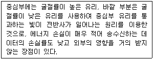
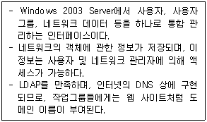

네트워크관리사-2급 (2014-10-26 기출문제)
1과목: TCP/IP
1. IPv6에서 사용되는 전송 방식이 아닌 것은?
- Anycast
- Unicast
- Multicast
- Broadcast
(정답률: 89%)

2. IPv4와 IPv6를 비교 설명한 것 중 올바른 것은?
- IPv4는 자체적으로 IPsec과 같은 보안 프로토콜을 내장하고 있지만, IPv6는 보안 프로토콜의 추가가 필요하다.
- IPv4는 필드 구분을 위해 '.'을 사용하나, IPv6는 ';'으로 구분한다.
- IPv4의 각 필드는 10진수로 표시되나, IPv6의 각 필드는 16진수로 표시된다.
- IPv4는 4개의 16bit 정수로 나누어지나, IPv6는 8개의 32bit 정수로 구분된다.
(정답률: 84%)
3. C Class의 IP Address에 대한 설명으로 옳지 않은 것은?
- Network ID는 '192.0.0 ~ 223.255.255'이고, Host ID는 '1 ~ 254'이다.
- IP Address가 203.240.155.32 인 경우, Network ID는 203.240, Host ID는 155.32가 된다.
- 통신망의 관리자는 Host ID '0', '255'를 제외하고, 254개의 호스트를 구성할 수 있다.
- Host ID가 255일 때는 메시지가 네트워크 전체로 브로드 캐스트 된다.
(정답률: 84%)
4. 인터넷의 잘 알려진 포트(Well-Known Port) 번호로 옳지 않은 것은?
- SSH - 22번
- FTP - 21번
- Telnet - 24번
- SMTP - 25번
(정답률: 85%)
5. Internet Protocol에 대한 설명으로 옳지 않은 것은?
- TCP에 의해 패킷으로 변환된 데이터를 Datalink Layer에 전달하여 다른 호스트로 전송하게 한다.
- 필요시 패킷을 절단하여 전송하기도 한다.
- 비 연결 프로토콜이다.
- OSI 7 Layer의 Datalink Layer에 대응한다.
(정답률: 62%)
6. Anonymous FTP에 대한 설명으로 적당하지 않은 것은?
- 사용자 계정이 없어도 파일을 수신 할 수 있다.
- 'Anonymous' 또는 'FTP' 를 계정으로 사용한다.
- 일반적으로 80번 포트를 사용하여 상호 통신한다.
- Internet의 많은 컴퓨터들이 Anonymous FTP를 사용하여 문서, S/W 등 모든 종류의 정보를 제공한다.
(정답률: 83%)
7. TCP를 사용하는 프로토콜로 옳지 않은 것은?
- FTP
- TFTP
- Telnet
- SMTP
(정답률: 59%)
8. IPv6로 넘어 오면서 기존의 TCP/IP 프로토콜이 통폐합되어 ICMPv6로 바뀌었다. 다음 중 IPv4에서 쓰이는 프로토콜 중 ICMPv6에 포함되지 않는 것은?
- RARP
- ICMP
- IGMP
- ARP
(정답률: 49%)
9. UDP에 대한 설명 중 올바른 것은?
- 응용 계층 프로토콜이다.
- 신뢰성 있는 전송을 제공한다.
- 연결 지향형 프로토콜이다.
- 비 연결성 데이터그램 서비스를 제공한다.
(정답률: 79%)
10. POP3에 대한 설명 중 옳지 않은 것은?
- SMTP와 반대 개념으로 메일을 서버로부터 내려 받아 읽을 수 있게 한다.
- 인터넷이 연결된 곳에서 인증 과정만 통과하면 장소에 상관없이 사용이 가능하다.
- 일반적으로 POP3로 접속하여 메일을 가져와도 서버에는 메일이 남아있다.
- Post Office Protocol Version 3의 약자이다.
(정답률: 65%)
11. IP 주소를 MAC(Media Access Control) 주소로 대응시키기 위해 사용되는 프로토콜은?
- Event viewer
- tracert
- ARP
- ping
(정답률: 90%)
12. 서브넷 마스크(Subnet Mask)에 대한 설명으로 옳지 않은 것은?
- A, B, C Class 대역의 IP Address는 모두 같은 서브넷 마스크를 사용한다.
- 하나의 네트워크 클래스를 여러 개의 네트워크로 분리하여 IP Address를 효율적으로 사용할 수 있다.
- 서브넷 마스크는 목적지 호스트의 IP Address가 동일 네트워크상에 있는지 확인한다.
- 서브넷 마스크를 이용하면, Traffic 관리 및 제어가 가능하다.
(정답률: 82%)
13. SNMP(Simple Network Management Protocol)에서 네트워크 장치를 감시하는 요소는?
- NetBEUI
- 에이전트(Agent)
- 병목
- 로그
(정답률: 80%)
14. 멀티캐스트(Multicast)에 사용되는 IP Class는?
- A Class
- B Class
- C Class
- D Class
(정답률: 80%)
15. 네트워크 ID '210.182.73.0'을 몇 개의 서브넷으로 나누고, 각 서브넷은 적어도 40개 이상의 Host ID를 필요로 한다. 적절한 서브넷 마스크 값은?
- 255.255.255.192
- 255.255.255.224
- 255.255.255.240
- 255.255.255.248
(정답률: 71%)
16. 네트워크상에서 오류와 제어 메시지를 보고하며, IP 데이터그램 형식으로 전송되는 Protocol은?
- IGMP
- RARP
- ICMP
- SMTP
(정답률: 83%)
17. 라우팅을 지원하는 프로토콜들로만 구성된 것은?
- NetBIOS, TCP/IP, IPX/SPX
- NetBEUI, DLC, Appletalk
- IPX/SPX, NetBEUI
- TCP/IP, IPX/SPX
(정답률: 75%)
2과목: 네트워크 일반
18. 두 스테이션 간에 전용 통신로가 있어 노드들 간의 연결된 링크로 각 링크마다 연결을 위해 한 채널을 전용하는 통신 방식은?
- 패킷 교환방식
- 메시지 교환방식
- 회선 교환방식
- 가상 회선방식
(정답률: 70%)
19. 다음에서 설명하는 전송매체는?

- Coaxial Cable
- Twisted Pair
- Thin Cable
- Optical Fiber
(정답률: 84%)
20. IEEE 표준안 중 CSMA/CA에 해당하는 표준은?
- 802.1
- 802.2
- 802.3
- 802.11
(정답률: 72%)
21. LAN에서 사용하는 CSMA/CD 프로토콜에 대한 설명으로 옳지 않은 것은?
- 무선랜에 사용되는 방식으로, ACK 프레임을 사용하여 전송하기 전에 충돌이 일어나지 않도록 한 후 전송을 시작한다.
- 송신을 원하는 호스트는 송신 전에 다른 호스트가 채널을 사용하는지 조사한다.
- 전송하는 동안 계속적으로 채널을 감시하여 충돌이 발생하는지를 조사한다.
- 충돌이 발생하게 되면, 충돌한 데이터들은 버려지고 데이터를 전송한 장치들에게 재전송을 요구한다.
(정답률: 71%)
22. 에러를 제어하거나 정정하기 위한 기법에 대한 설명 중 옳지 않은 것은?
- 패리티 검사(Parity Check Bit): 원래의 데이터에 1비트를 추가하여 에러가 있는지 없는지 확인하는 방식
- 순환 잉여도 검사(CRC): 순환 중복 검사를 위해 미리 정해진 다항식을 적용하여 오류를 검출하는 방식
- 해밍코드(Hamming Code) : 전송된 문자에 대해 배타적 논리합(EOR)을 누적하여 그 결과에 근거를 둔 오류 검색 방식
- 블록합 검사(BSC) : 패리티 검사의 단점을 보완한 방식으로, 프레임 내에서 모든 문자의 같은 위치 비트들에 대한 패리티를 추가로 계산하여 블록의 맨 마지막에 추가 문자를 부가하는 방식
(정답률: 70%)
23. PCM 전송 방식을 순서대로 올바르게 나타낸 것은?
- 아날로그 신호 → 부호화 → 양자화 → 표본화 → 전송로
- 아날로그 신호 → 양자화 → 표본화 → 부호화 → 전송로
- 아날로그 신호 → 표본화 → 양자화 → 부호화 → 전송로
- 아날로그 신호 → 부호화 → 표본화 → 양자화 → 전송로
(정답률: 88%)
24. OSI 7 Layer 중 물리적 링크 간의 신뢰성 있는 정보 전송을 제공하며 동기화, 에러 제어, 흐름 제어로서 데이터의 블록을 전송하는 기능을 가진 계층은?
- 물리 계층
- 데이터링크 계층
- 트랜스포트 계층
- 네트워크 계층
(정답률: 73%)
25. 프로토콜의 기능으로 옳지 않은 것은?
- 캡슐화
- 분할과 재조립
- 멀티플렉싱(다중화)
- 확장성
(정답률: 59%)
26. 네트워킹 과정에 간혹 발생되는 브로드캐스트 스톰(Broadcast Storm)은?
- 리피터에서 전송된 목적지 없는 패킷
- 라우터에서 전송된 출발지 주소가 없는 패킷
- 네트워크 대역폭이 포화상태가 되는 것
- 네트워크 대역폭이 불포화상태가 되는 것
(정답률: 75%)
27. 데이터 전송과정에서 먼저 전송된 패킷이 나중에 도착되어 수신측 노드에서 패킷의 순서를 바르게 제어하는 방식은?
- 순서 제어
- 흐름 제어
- 오류 제어
- 연결 제어
(정답률: 77%)
3과목: NOS
28. Windows 2003 Server의 IIS Web Server 사이트에서 사용하는 디렉터리에 대한 설명 중 옳지 않은 것은?
- IIS 사이트의 등록되는 홈 디렉터리는 항상 로컬 컴퓨터의 하드디스크에 있는 디렉터리만 설정가능하다.
- 디렉터리 설정화면에 읽기/쓰기 등의 액세스 권한을 설정할 수 있다.
- 가상 디렉터리란 홈 디렉터리 내에 포함되어 있지 않는 어떤 디렉터리로 부터 퍼블리싱하기 위하여 사용한다.
- 홈 디렉터리 기본 위치는 '/inetpub/wwwroot'이다.
(정답률: 67%)
29. FTP 가상 디렉터리에 관한 설명 중 옳지 않은 것은?
- 가상 디렉터리의 Alias는 파일이 실제로 속해 있던 디렉터리 이름과 일치하여야 한다.
- 가상 디렉터리는 읽기와 쓰기의 권한 설정을 할 수 있다.
- FTP 디렉터리 확장에서 가상 디렉터리를 사용하면 모든 FTP 컨텐츠를 하나의 시스템으로 옮기고 정렬할 필요가 없다.
- 가상 디렉터리를 정의하기 위해서는 Internet Information Services MMC에서 설정할 FTP사이트를 실행한다.
(정답률: 67%)
30. 현재 Windows 2003 Server의 DNS 구성은 정방향 조회 영역을 구성하고, DNS 조회 요구의 속도 증가와 문제 해결을 돕기 위한 역방향 조회 영역을 구성하고 있다. 호스트 이름에 인트라넷 서버의 IP Address를 매핑 하려 할 때, 역방향 조회 영역에서 각각의 인트라넷 서버에 대해 어떤 종류의 레코드를 생성해야 하는가?
- Host(A)
- Pointer(PTR)
- Start of Authority(SoA)
- Name Server(NS)
(정답률: 69%)
31. DNS 서버를 설치하고 나서 사내 메일 서버를 위해 추가할 데이터베이스 레코드는?
- MX
- CNAME
- A
- NS
(정답률: 70%)
32. Windows 2003 Server에서 관리 작업을 수행하거나 네트워크 리소스에 임시로 엑세스할 수 있도록 만들어진 기본 제공 사용자 계정은?
- Administrator
- User
- Active Directory
- Everyone
(정답률: 73%)
33. Windows 2003 Server에서 DHCP 범위 (Dynamic Host Configuration Protocol Scope) 혹은 주소 풀(Address Pool)을 만들 때 주의할 점으로 옳지 않은 것은?
- 모든 DHCP 서버는 최소한 하나의 DHCP 범위를 반드시 가져야 한다.
- DHCP 주소 범위에서 정적으로 할당되어야하는 주소가 있다면 반드시 해당 주소를 제외해야 한다.
- 네트워크에 여러 DHCP 서버를 운영할 경우에는 DHCP 범위가 겹치지 않아야 한다.
- 하나의 서브넷에는 여러 개의 DHCP 범위가 사용될 수 있다.
(정답률: 49%)
34. Windows 2003 Server의 'netstat' 명령 중 라우팅 테이블을 확인 할 수 있는 명령 옵션은?
- netstat -a
- netstat -r
- netstat -n
- netstat -s
(정답률: 71%)
35. 다음에 설명하는 Windows 2003 Server의 기능은?

- Internet Information Server
- Domain Name Server
- Dynamic Host Configuration Protocol
- Active Directory
(정답률: 58%)
36. Linux 명령어 중 사용자 그룹을 생성하기 위해 사용되는 명령어는?
- groups
- mkgroup
- groupstart
- groupadd
(정답률: 70%)
37. Linux의 각 디렉터리에 대한 설명으로 옳지 않은 것은?
- /bin : 추가된 응용 프로그램 패키지가 설치되는 디렉터리이다.
- /lib : 각종 라이브러리가 저장된 디렉터리로 커널 모듈도 이곳에 설치된다.
- /usr : 시스템이 정상적으로 동작하는데 필요한 모든 명령과 라이브러리 및 매뉴얼 페이지가 저장된다.
- /root : 루트 사용자의 홈 디렉터리로 루트 사용자만 접근가능하다.
(정답률: 64%)
38. Linux에서 네트워크 설정에 관한 설명으로 옳지 않은 것은?
- Linux는 Windows 시스템과 같이 완벽한 PnP 기능을 지원하지 못한다.
- LAN 카드 설치는 Linux 커널에 드라이버를 포함시키거나, 필요할 때마다 메모리에 로딩 할 수 있다.
- LAN 카드를 메모리에 로딩해서 사용하려면 modprobe명령을 사용한다.
- 네트워크 설정은 ipconfig 로 확인 할 수 있다.
(정답률: 77%)
39. Linux 시스템에서 'exam.txt' 파일의 내용을 보려고 하는데, 내용이 많아서 한 페이지를 넘어가 버린다. 한 페이지씩 차례대로 보기 위한 명령은?
- cat exam.txt | more
- cat exam.txt | grep
- find exam.txt | grep
- tar exam.txt | grep
(정답률: 68%)
40. 이벤트 로깅 옵션 설정에 관한 설명으로 옳지 않은 것은?
- 이벤트 뷰어의 콘솔 트리에서 옵션을 설정할 [로그]를 클릭한 후 [활동] 메뉴에서 [속성]의 [일반] 탭에서 옵션을 지정한다.
- 이벤트 로그 서비스에서 발생하는 시스템 로그를 관찰하면 시스템 문제를 해결하고 예견할 수 있다.
- 이벤트 뷰어를 열려면 시작, 제어판, 관리도구, 이벤트 뷰어를 차례로 클릭한다.
- 최상의 보안을 유지하기 위하여 항상 관리자로 로깅옵션을 설정한다.
(정답률: 66%)
41. DHCP 서버로 부터 임대 받은 IP Address를 수동으로 반납하는 명령어로 올바른 것은?
- ipconfig /release
- ipconfig /renew
- ipconfig /all
- ipconfig /remove
(정답률: 73%)
42. Linux의 일반적인 설명이다. 옳지 않은 것은?
- 대형 컴퓨터에서 사용하는 UNIX를 PC환경에서 사용할수 있도록 하기 위해서 개발된 것이 현재의 리눅스의 모태가 되었다.
- 리눅스의 기본 동작구조는 쉘이 사용자의 명령어를 해석해주면 커널은 그 명령을 수행하는 구조로 되어있다.
- NFS는 MS Windows Server 기반의 NTFS처럼 로컬 파일 시스템이다.
- 마운트란 물리적인 하드디스크나 파티션을 논리적으로 시스템에 연결시켜 주는 것이다.
(정답률: 63%)
43. Linux에서 네임서버의 동작 확인 및 운영관리를 위하여 널리 사용되는 명령어는?
- nslookup
- netstat
- ping
- traceroute
(정답률: 62%)
44. Windows 2003 Server NTFS의 특징으로 올바른 것은?
- 마스터 파일 테이블이 존재하여 이에 대한 복제와 파일 로그가 유지되므로 파일 복구가 가능하다.
- Windows 2003 Server 내부 프로그램으로 FAT 파일 시스템으로 변환 가능하다.
- 파일 이름은 8자로 제한된다.
- 각 디렉터리별 권한 설정이 불가능하다.
(정답률: 43%)
45. 다음 중 아파치(Apache) 환경 설정 파일은?
- named.conf
- smb.conf
- lilo.conf
- httpd.conf
(정답률: 75%)
4과목: 네트워크 운용기기
46. 네트워크상에 발생한 트래픽을 제어하며, 네트워크상의 경로 설정 정보를 가지고 최적의 경로를 결정하는 장비는?
- 브리지(Bridge)
- 라우터(Router)
- 리피터(Repeater)
- 게이트웨이(Gateway)
(정답률: 81%)
47. 장비간 거리가 증가하거나 케이블 손실로 인한 신호 감쇠를 재생시키기 위한 목적으로 사용되는 네트워크 장치는?
- Gateway
- Router
- Bridge
- Repeater
(정답률: 84%)
48. RAID 시스템 중 한 드라이브에 기록되는 모든 데이터를 다른 드라이브에 복사해 놓는 방법으로 복구 능력을 제공하며, 'Mirroring'으로 불리는 것은?
- RAID 0
- RAID 1
- RAID 3
- RAID 4
(정답률: 86%)
49. 스위치 허브(Switch Hub)에 대한 설명 중 옳지 않은 것은?
- 네트워크 관리가 용이하다.
- 네트워크 확장이 용이하다.
- 포트 당 일정한 속도를 보장해 준다.
- 스위치 허브에 연결된 사용자가 많을수록 전송속도는 향상된다.
(정답률: 85%)
50. Wireless LAN에 대한 설명으로 옳지 않은 것은?
- 유선랜에 비하여 일정거리 내에서 이동성에 대한 자유로움이 보장된다.
- 무선랜은 Access Point와 무선 단말기로 구성된다.
- 무선랜은 주파수, 속도 및 통신방식에 따라 IEEE 802.11 a/b/g/n 등으로 정의 되어있다.
- 동일한 Access Point를 사용할 경우 주변 환경에 의한 전송속도 영향은 없다.
(정답률: 77%)